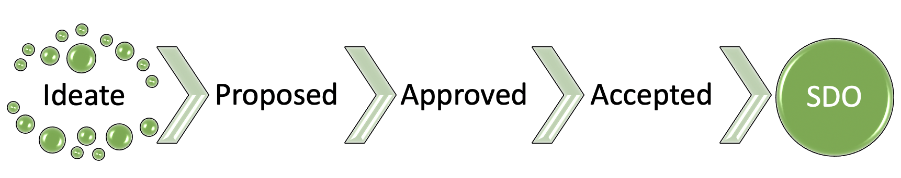

State Management
All ToIP deliverables are governed by the standard three-stage approval process defined by our JDF charter (note that this process is the same for all JDF projects at the Linux Foundation).
Our Lifecycle Management Process describes the process for the maturation of ToIP Deliverables. Each deliverable, regardless of type, follows the same standard lifecycle.

Governance¶
The ToIP Steering Committee and Working Groups each perform a role in the management of state changes to ToIP Deliverables. The current status of all deliverables is available under the Activity Status section of our Deliverables Portal.
| Deliverable State | Governing Body | Instructions |
|---|---|---|
| Proposed | Working Group | Submit a Proposal |
| Approved | Working Group | Working Group Approved Deliverable |
| Accepted | Steering Committee | Foundation-wide Approved Deliverable |
Instructions¶
Working Group Approved Deliverable¶
- Work through the incubation process defined by the WG that is sponsoring your deliverable.
-
Once the sponsoring WG agrees to graduate the deliverable from
proposedtoapprovedstatus, a WG voting member MUST perform the following actions:- Determine the target deliverable repo that manages the deliverable
- Open an issue against the target deliverable repo.
- Fork the target deliverable repo
-
Change the following header details in the 'README.md'
- Status: [APPROVED](./process/lifecycle_management.md) - Since: YYYY-MM-DD (date of WG Approval) - Status Note: (explanation of state change, could be a link to WG Meeting Minutes) -
Commit changes and submit a PR against the target deliverable repo referencing the issue created in Step 2. The PR comment should document why the status is being changed.
- Open an issue against the Deliverables Repo.
- Fork the Deliverables Repo
- Make the appropriate changes to the
/results/proposed.mdand/results/approved.mdfiles. - Commit changes and submit a PR against the Deliverables Repo. The PR comment should document the reason for the change.
Foundation-wide Approved Deliverable¶
- If the sponsoring WG seeks Foundation-wide approval, it must submit the deliverable in accepted state to the Executive Director for a vote by the Steering Committee.
- Coordinate with the Executive Director on a Steering Committee Meeting date and agenda vote.
-
Prepare for planned meeting by selecting a WG voting member to perform the following actions:
- Determine the target deliverable repo that manages the deliverable
- Open an issue against the target deliverable repo.
- Fork the target deliverable repo
-
Change the following header details in the 'README.md'
- Status: [ACCEPTED](./process/lifecycle_management.md) - Since: YYYY-MM-DD (date of PLANNED Vote) - Status Note: (explanation of state change, could be a link to WG Meeting Minutes) -
Commit changes and submit a PR against the target deliverable repo referencing the issue created in Step 2. The PR comment should document why the status is being changed.
- Open an issue against the Deliverables Repo.
- Fork the Deliverables Repo
- Make the appropriate changes to the
/results/approved.mdand/results/accepted.mdfiles. - Commit changes and submit a PR against the Deliverables Repo. The PR comment should document the reason for the change.